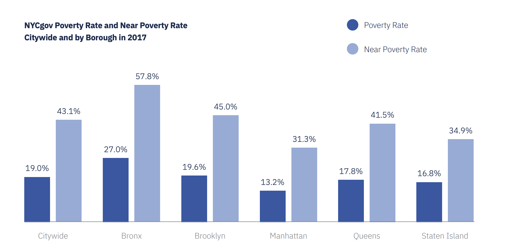

Some Social Economics Factors

sdfsdfsdfsdfsdfds
Project Summary
Stewardship is defined as the activity or job of protecting, taking care of, or being responsible for something. Pratt SAVI (Spatial Analysis and Visualization Initiative) lab is working with the STEW-MAP, They strive to help their community-based partners further their mission with data. The STEW-MAP dataset includes information on the location, scope, and activities of local organizations involved in stewardship and environmental work in New York City. It also provides details on the primary focus, organizational function, and work site of these organizations.
Since I moved to NYC, I started to be interested in the environment and community health performance due to the large number of people in the city. I came across the STEW-MAP project, which involved collaboration with Pratt as one of the participating organizations. The large quantity of data presented in the dataset prompts me to question whether the organizations listed in STEW-MAP truly have an impact on the state of the environment and the overall health of the community.
What's our goal?
Explore the impact of local organizations on environmental performances and community health outcomes.
If knowing history, location and information sharing information, would it possible to predict the budget level of an organization?
Potential to inform policy decisions and community initiatives aimed at improving environmental and community health outcomes in New York City
STEW-MAP Project in New York
STEW-MAP supports government and civic groups alike to effectively coordinate and collaborate, to identify opportunities to better engage New Yorkers in caring for the environment, and to enhance the capacity of the stewards of our communities. This tool can support civic participation, increase neighborhoods’ social cohesion, and support requests for funding and programming. The first ever STEW-MAP survey was completed in NYC in 2007. Since the publication of the data, STEW-MAP has been used in NYC to support civic participation, increase neighborhoods’ social cohesion, and support requests for funding and programming. In 2015, STEW-MAP was replicated for waterfront-focused stewardship groups in the New York Harbor area, in collaboration with the Hudson River Foundation/Harbor Estuary Project (HRF/HEP). In 2017, STEW-MAP was replicated in the New York City Region. This study was expanded to include the entire greater metropolitan area and added “transform” as a function. In this study, 55 partners served as data providers and 847 respondents were included in the research results. The data collected in the 2017 survey can be explored visually and spatially on the online map and dashboard.
STEW-MAP includes 720 groups with a combined budget of $5,301,875,991 and a total of approximately 633,000 people engaged as staff, volunteers, and members. Explore some of our findings below:
Stewardship groups don’t just focus on the environment. They hail from many different sectors, including public health, social services, transportation, education, and housing. Yet, these groups all share the belief that the environment can be a catalyst for social change. groups focus on transformation of waste, food, or energy systems, and therefore have multiple sites across the city. In addition, we found that many groups work beyond the boundaries of New York City and into the greater metropolitan region.
Stewardship is one of the ways that NYC communities respond to disturbances and stressors such as climate change, extreme weather, disinvestment and gentrification. This pattern has repeated over time here in New York City, with stewardship groups forming in response to the fiscal crisis of the 1970s, September 11th, Hurricane Sandy, and most recently, the COVID-19 crisis.
What data do I need?
STEW-MAP dataset:The STEW-MAP dataset will provide us with information on the location, scope, and activities of local organizations, including their primary focus, organizational function, and work site. Under this project’s scope, we’ll use primary focus and location,
SODA API - New York OpenData Air Quality: The datasets combined of different types of pollutant emissions, levels of exposure, and population vulnerability. These indicators provide a perspective of environmental outcome across time.
DATA2GO.NYC dataset: provides information on various health and environmental indicators across different neighborhoods in New York City. It includes data on air quality, noise complaints, public parks and recreation spaces, recycling rates, water system complaints, and health outcomes such as cancer deaths, drug-related hospitalizations, infant mortality, and obesity rates.
What would affect STEW-MAP organizations’ budget?
Budget Level:
Does funding year affect the level of budget? How?
Does location affect the level of budget? Which borough will have the high level budget organization?
Will posting on social media affect the level of budget?
How communication affect organization's scale?
Social media, web and email advertising attracts more volunteers to involve in the non-profit events.
Word of Mouth acts as the least important reason in term of affecting the volunteers, networks and budget.
Lots of different things will influence funding budget, for example if the organization is sponsored by goverment or enterprise.
Does the contribution from STEW-MAP organization have solid impact in NYC?
No obvious correlation between fine particulate matters and the number of organizations in New York City.
PM 2.5 stays similar across all boroughs.
We can say because of the Nitrogen Dioxide concentration is higher in Manhattan and Brooklyn which indicate a certain level of environmental issue, hence, there are more STEW-MAP organizations.
Potential - to establish more organizations in Staten Island.
Infant mortality, drug-related hospitalizations, No health insurance, No exercise, Obese are saying there's a certain correlation between organizations and community health.
Some Social Economics Factors
sdfsdfsdfsdfsdfds
Created for STEWMAP Data Storytelling using Bootstrap 5 by Sharon Yuxin Tao.
Contact at:
ytao6@pratt.edu